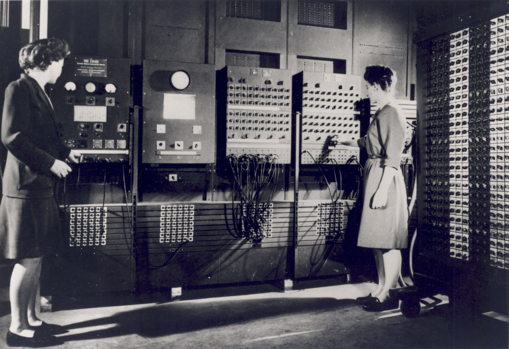
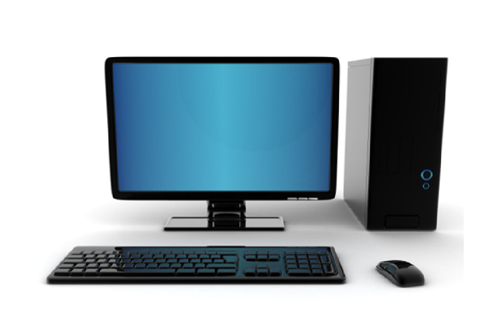

Historia de las Computadoras: Del Pasado al Futuro
Un recorrido por la evolución de la tecnología que cambió el mundo
¿Qué es una computadora?
Una computadora es un dispositivo electrónico capaz de recibir, procesar y almacenar información. A lo largo de la historia ha evolucionado desde enormes máquinas hasta los equipos modernos que utilizamos todos los días.
Dato curioso:
La primera computadora ocupaba una habitación completa y pesaba varias toneladas.
Primera Computadora

Evolución de las Computadoras
🖥 Primera generación (1940 - 1956)
Las primeras computadoras utilizaban tubos al vacío, eran muy grandes y ocupaban habitaciones completas.
💻 Computadoras personales
Una computadora personal (PC) es un dispositivo electrónico diseñado, para ser usado por un solo usuario a la vez, destacando las computadoras de escritorio, las laptops y las tabletas. Sirven para navegar por internet, trabajar y estudiar.
💻 Computadoras actuales
Las computadoras actuales son más rápidas, pequeñas y potentes. Se utilizan para estudiar, trabajar, comunicarse y desarrollar nuevas tecnologías como la Inteligencia Artificial.
Componentes Principales de una Computadora
Conocer las partes principales de una computadora ayuda a comprender su funcionamiento y uso correcto.
- 🖥️ Monitor
- ⌨️ Teclado
- 🖱️ Mouse
- 💾 Memoria RAM
- 🧠 Procesador (CPU)
Pasos básicos para encender una computadora
Sigue estos pasos básicos para iniciar correctamente una computadora.
- Presionar el botón de encendido.
- Esperar que el sistema operativo inicie.
- Ingresar el usuario y contraseña.
- Abrir los programas que se van a utilizar.
Galería de Imágenes
A continuación se muestran algunos ejemplos de la evolución de las computadoras.
🖥️ ENIAC (1946)
Fue una de las primeras computadoras electrónicas de propósito general
🖥️ Computadora de escritorio

Popularizó el uso de la informática en hogares y oficinas.
💻 Laptop moderna

Permite trabajar y estudiar desde cualquier lugar
🎥 Video educativo
Mira este video para conocer más sobre la historia de las computadoras.
🎵 Audio educativo
Escucha este breve audio para conocer algunos datos interesantes sobre la historia de las computadoras.
Enlaces útiles
Si deseas aprender más sobre historias de computadora, visita estos sitios web:
¿Por qué aprender informática?
La informática está presente en casi todos los aspectos de nuestra vida. Desde la educación hasta el trabajo, conocer el funcionamiento de las computadoras permite aprovechar mejor la tecnología y desarrollar nuevas habilidades.
📚 Aprendizaje
Facilita el estudio y el acceso a información de todo el mundo.
💼 Trabajo
La mayoría de las profesiones utilizan computadoras y herramientas digitales.
🚀 Futuro
Aprender informática abre nuevas oportunidades personales y profesionales.
Conclusión
La historia de las computadoras demuestra cómo la tecnología ha evolucionado con el paso del tiempo, permitiendo mejorar la educación, la comunicación, el trabajo y la vida cotidiana.
¡Gracias por visitar mi primera página web!